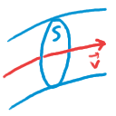
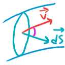
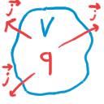

Постоянный ток
Определение
Постоянный ток – любое упорядоченное движение зарядов. Для характерезации тока вводят понятие силы тока. Сила тока – количество заряда прошедшее через поперечное сечение проводника, которое перпендикулярно потоку \[ I = \frac{dq}{qt} \quad \left[ \frac{Кл}{с} \right] \]
Сейчас ампер - производная единица определяемая через секунду(атом цезия) и элементарный заряд. Но такое определение не характеризует распределение протекания заряда через сечение. Поэтому вводят понятие плотность тока.
Плотность тока
\[ j = \frac{dI}{dS} \]
\(dS\) - площадь перпендикулярная потоку

Также плотность тока удобно представить в виде вектора. Вектор плотности потока – как плотность потока на сонаправлен движению положительных зарядов \(\vec i \uparrow\uparrow \vec v\).
Найдём другое выражение для плотности тока. Для этого выполним несколько преобразований. Для начала
\(dq = \rho \cdot dV\)
\(dV = dS \cdot v \cdot dt\)
Тогда \[ j = \frac{dI}{dS} = \frac{dq}{dt\, dS} = \frac{\rho \, dV}{dt\, dS} = \frac{\rho \, dS\, v \, dt}{dt\, dS} \]
Тут всё сокращается и если скорость у нас вектор, то всё можно записать в векторном виде:
\[ \vec j = \rho \vec v \]
Также, если \(\rho\) представить как концентрацию на заряд одной частицы \[ \rho = n \cdot q_1 \]
То мы получаем выражение: \[ \vec j = q_1 \, n\, \vec v \]
Но важно, что данная формула справедлива лишь в случае, когда двигаются заряды лишь одного типа. Но это легко исправить, если определить суммарную плотность тока как сумму всех плотностей \[ \vec j =\sum {q_i \, n_i, {\vec v}_i} \]
До этого мы везде рассматривали \(dS\) как площадку перпендикулярную потоку, но если это будет не так, то ток можно определить через скалярное произведение
\[ dI = j \, dS = \vec j \cdot \vec dS \] \(\vec dS\) – по направлению нормали

И тогда полный ток будет определяться
\[ I = \int{\vec j \cdot d \vec S} \]
Теперь возьмём какой-нибудь замкнутый объём \(V\) с зарядом \(q\). Пусть из этого объёма вытекает заряд, тогда в каждой точке поверхности можно задать плотность тока \(\vec j\)
\[ -\frac{\partial q}{\partial t} = \oint{\vec j \cdot d\vec S} \]

Так как у нас объём не двигается, то нужно считать производную частной. Продифференцируем \[ -\frac{\partial \rho}{\partial t} = \frac{d}{dV}\oint{\vec j \cdot d\vec S} = \nabla \cdot (\vec j) \]
В итоге получаем, что \[ \nabla \cdot \vec j = -\frac{\partial\rho}{\partial t} \]
Или же иначе, это получается дифференциальная форма закона сохранения заряда.
Скорость частиц
Пусть у нас ток будет 100 А($I A $). Пусть проводник будет \(S = 1 \, см^2\) Также будем считать, что каждый атом проводника отдаёт в общее пользование по одному электрону, тогда \[ n = \frac{N}{V}= \frac{\nu \, N_A}{V} = \frac{m}{M}\frac{N_A}{V} = \frac{\rho \, N_A}{M} \]
И если подставить значения для меди, \(n \approx 0.75 \cdot 10^{29} \;m^{-3}\) \[ j = q_1 \,n \, v = \frac{I}{S} \]
И тогда \[ v = \frac{I}{S\,q_1\,n} \]
Получается, что \(v \approx \frac{1}{12} \cdot 10^{-3}\; \frac{m}{s}\). То есть скорость порядка \(10^{-4}\) м в секунду. Что очень мало, при том, что тепловая скорость \(v_t \approx \sqrt{\frac{3\,k\,T}{m_e}} \approx 1.2 \cdot 10^5 \frac{m}{s}\). Что намного больше. Но важна не скорость, а то, что движение упорядоченно что и приводит к переносу большого заряда.